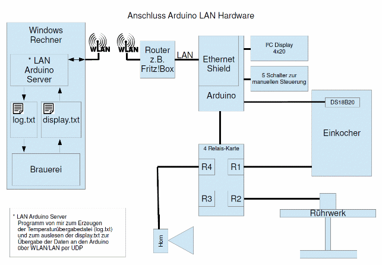
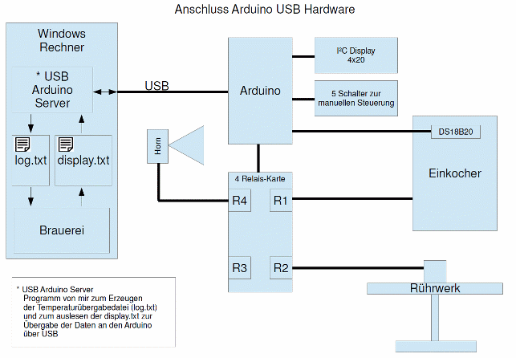
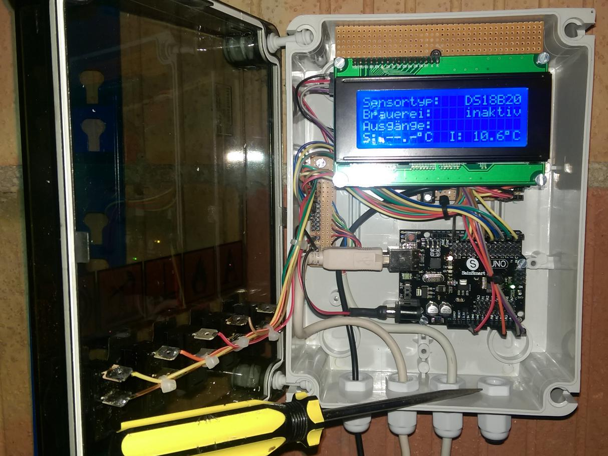

Hilfe Datei zu Brauerei V 1.40 – by Emilio – HOME
Steuerung und Messung mit Arduino:
Mit den mitgelieferten Arduino Sketches ist es möglich die Temperaturmessung, das Schalten der Hardware, ein externes Display sowie das manuelle Schalten der Hardware mittels eines Arduinos vorzunehmen.
Hieru gibt es die zwei Kommunikationsvarianten USB oder LAN. Im Installationpaket ist jeweils ein passender Arduino-Sketch, ein Schaltplan so wie ein Kommunikationsprogramm welches für den Datenaustausch zwischen der Brauerei und dem Arduino sorgt.
Zur Verdeutlichung der funktion hier zwei Blockschaltbilder:


In den Kommunikationsprogrammen sind nur wenige selbsterklärende Einstellungen notwendig. Die Funktion der Kommunikation ist im jeweiligen Sketch für den Arduino beschrieben.
Ein Beispiel-Aufbau kann z.B. so aussehen:
